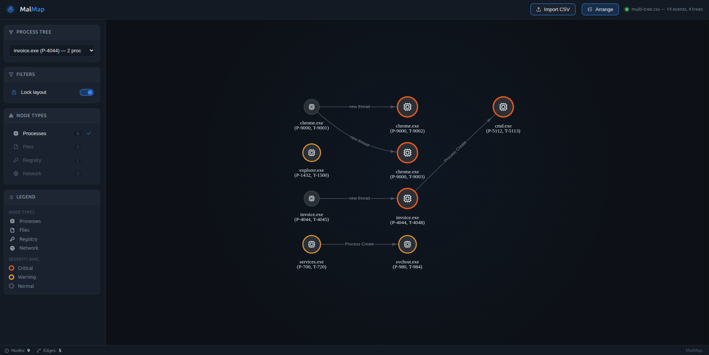

invoice.exe spawns a thread that launches cmd.exe. Orange rings mark critical behavior and gold rings mark warnings.Detonate a sample with Process Monitor running and you get tens of thousands of rows: every RegQueryValue, every CreateFile, every thread start. The interesting part (a dropper writing an .exe into %TEMP%, a Run key, an outbound TCP connection) is in there somewhere, but you have to filter and scroll to find it.
ProcDOT solved this years ago by drawing the capture as a graph. I wanted something lighter that runs in any browser with nothing to install, handles whatever columns ProcMon exports, and looks like the incident graphs analysts already know from Defender.
"" escapes. Known ProcMon columns map to canonical fields, and any other column is kept under an auto camelCase key.Thread-centric nodes
A node is a (process, thread) pair labeled name (P-pid, T-tid). A single-threaded process is one node. Extra threads appear as sibling nodes connected by a new thread edge, so you can see which thread did the damage. In the screenshot, it's the second thread of invoice.exe that creates cmd.exe, not the main one.
Severity heuristic
| Ring | Triggers |
|---|---|
| 🟠 Critical | Writing to a Run/RunOnce key; creating, writing or renaming .exe .dll .scr .bat .cmd .ps1 .vbs .js files in Temp, AppData or ProgramData; TCP Connect / UDP Send |
| 🟡 Warning | Any process operation; registry set, create, delete or rename; file write, create, delete or rename |
| ⚪ Normal | Reads, queries, closes and everything else |
scoreSeverity(event) in js/graph-builder.js. To tune detection for a malware family, you only need to edit that function.
| Feature | What it does |
|---|---|
| Import CSV | Loads any ProcMon CSV export. Columns can be in any order, and every column is preserved. |
| Process Tree | Picks a root process and shows only its subtree. Switching trees is instant, with no re-parse. |
| Node Type Filters | Turns process, file, registry and network nodes on or off, with live counts. |
| Arrange | A deterministic left-to-right tree layout built from the visible nodes only, so the same filter always gives the same picture. |
| Lock Layout | Freezes physics so you can drag one node without moving its neighbors. |
# No build step. It needs internet for two CDN scripts (vis-network, lucide).
git clone https://github.com/0bsh3ll/malmap.git && cd malmap
xdg-open index.html # or: open index.html on macOSIn ProcMon, go to File → Save… → Comma-Separated Values. In MalMap, click Import CSV, pick a root from the Process Tree dropdown, and press Arrange. To try it without a capture, use the bundled samples/multi-tree.csv, which has three root trees covering every node type.
Expected format
"Time of Day","Process Name","PID","Operation","Path","Result","Detail"TID column (Options → Select Columns → Thread ID) enables the per-thread view. Parent/child links come from the PID: N value in the Detail field of Process Create events. Thread links come from Thread ID: N in Thread Create events.
malmap/
├── index.html # Dashboard shell
├── css/styles.css # Theme + layout
├── js/
│ ├── parser.js # ProcMon CSV → normalized events
│ ├── graph-builder.js # events → nodes/edges, process trees, severity
│ ├── node-renderer.js # SVG pucks: icon + severity ring
│ ├── mock-data.js # Demo graph shown before import
│ └── app.js # Filters, legend, arrange, lock, import
├── samples/ # sample.csv, multi-tree.csv
└── test/parser-test.html # Open in a browser to run the parser testsOn the roadmap: search and highlight, a detail panel when you click a node (with the full ProcMon row), time scrubbing to replay a detonation, collapsible subtrees, and rooting the view at any mid-tree process.